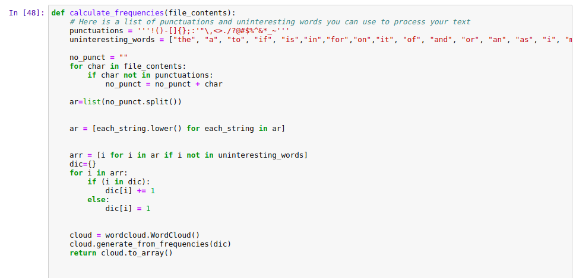

Word Cloud Using Python
Posted JUNE 26,2020
What is Word Cloud?
A word cloud is a popular visualization of words typically associated with Internet keywords and text data. They are most commonly used to highlight popular or trending terms based on frequency of use and prominence. A word cloud is a beautiful, informative image that communicates much in a single glance.
About This Project
This is my first data visualization project which I did while completing a
Coursera Course
based on Data Science. Most of the importing of libraries and code for file upload extension
was provided my the coursera platform.
But the main function to remove the punctuations and
uninteresting words and code for Word Cloud Generator was coded by me.
Code and Snippets
The below code is a function that removes all the punctuations and the uninteresting words from and a file with txt extension and then stores the count of each word in a dictionary so that it can be passed in the matplotlib funtion to create a Word Cloud Image.
Here u can see iI call the calculate_frequencies() function and store the resultant dictionary in myimage variable. Then I use the matplotlib library to pass the dictionary as argument and genrate the Word Cloud.

Download Full Code as .ipynb
south